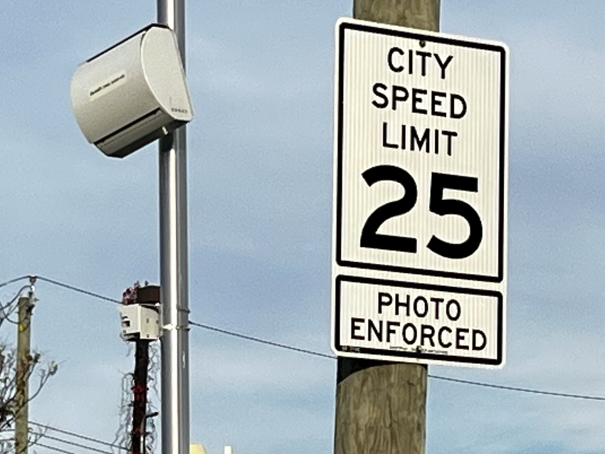

Staten Island Speed Camera Ready for Action. Photo By Joe Caffrey
Speed Camera Violations Go Down After One Year of 24/7 Operation
By Joe Caffrey
Novemebr 26, 2023
On August 1st 2022 Staten Island’s 192 Speed Cameras began issuing violation around the clock. The cameras issue $50 speeding tickets to any vehicle caught on camera traveling 11 miles per hour over the posted speed limit. By August 31 of 2022 the new 24/7 operating hours racked up 51,000 violation island wide. Twenty cameras issued 55% of the violations with a total of 28,011 tickets.
24/7 Operation of Speed Cameras Causes Reduction in Speeding
Decried as a municipal money grab by residents and in editorials in the Staten Island Advance newspaper, the violations numbers from August 2023 are down 10,000 violations from August 2022 to 40,000. Ydanis Rodriguez, the DOT Commissioner, says this was the goal all along.
One Year later The Same Twenty Locations Issued 16,174 Violations, a 42% Reduction From 2022. They Are Now Only 40% of The Total 40,000 August 2023 Violations
DOT Commisioner Ydanis Rodriguez on the Staten Island Ferry. Photo By Joe Caffrey
On the lower deck of the John J Marchi ferry heading from Staten Island to Manhattan DOT Commisioner Ydanis Rodriquez disputed the belief that speed cameras are placed in intersections to make the most revenue. “So, all decisions that we make on the speed camera are about safety improvements, just safety.” Rodriquez said about the process of choosing where the speed cameras are placed. “I feel the message is clear. People that don't want to have a ticket should drive the speed limit, which is 25 miles per hour.”
In At Least one Location Speeding Was Eliminated
For More Information and a World of Useful Data Visit: https://opendata.cityofnewyork.us/